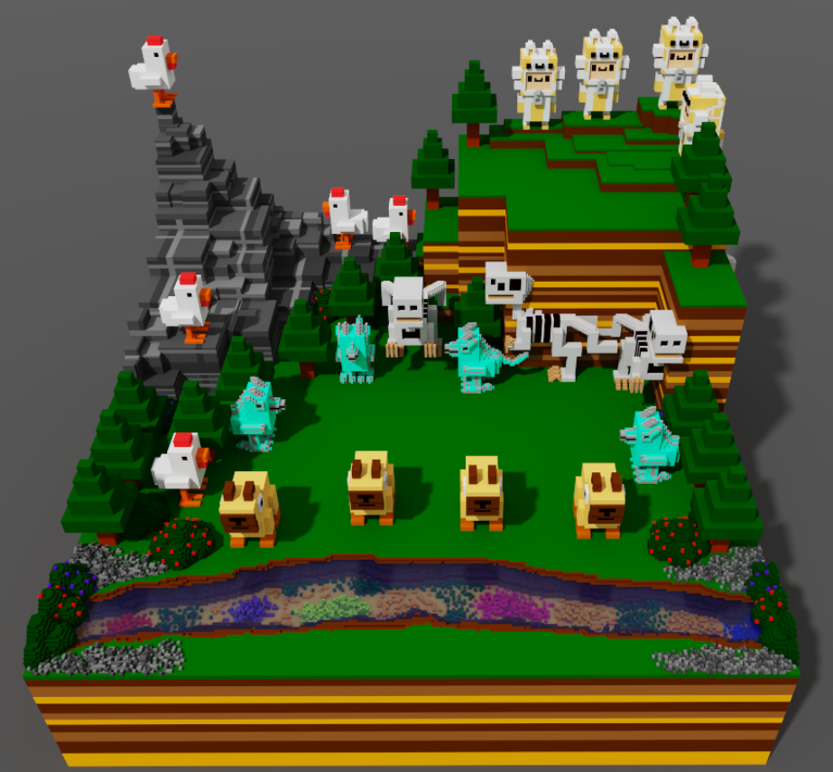
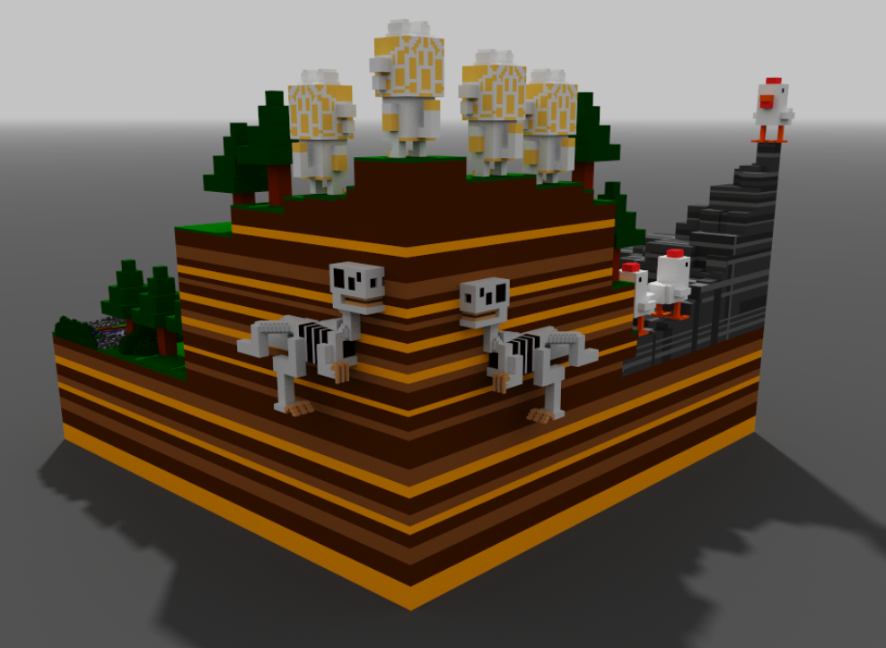

Custom Made Crossy Road Scene


This is a custom Crossy Road scene I created using MagicaVoxel.
My custom Crossy Road scene is the final version of my project. I had to create every character in seperate projects, Then I imported all the characters into another project with all the terrain and arranged them to create the final scene. Overall this project took me 10-12h and I am very proud of it, it's one of my favourites.